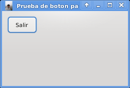

Tutorial de python+qt. Parte 2
Posted on Mon 25 January 2010 in Tutorial Python • 1 min read
En ese tutorial se explicará como colocarle un icono a la ventana, crear un botón para salir de la aplicación y todo el código se desarrollará orientado a objetos.
#!/usr/bin/env python
# -*- coding: utf-8 -*-
#Importar módulo sys
import sys
#De PyQt4 importar QtGui y QtCore
from PyQt4 import QtGui, QtCore
#Se crea la clase QuitButton que hereda de la clase QWidget.
class QuitButton(QtGui.QWidget):
def __init__(self, parent=None):
QtGui.QWidget.__init__(self, parent)
#Se define el tamaño de la ventana
self.setGeometry(400, 400, 250, 150)
#Se le coloca un título a la ventana y se asocia un icono.
self.setWindowTitle('Prueba de boton para salir')
self.setWindowIcon(QtGui.QIcon('./icono.png'))
#Se crea el botón salir con su tamaño
quit = QtGui.QPushButton('Salir', self)
quit.setGeometry(10, 10, 60, 35)
#Se asocia la señal del botón con quit
self.connect(quit, QtCore.SIGNAL('clicked()'),QtGui.qApp, QtCore.SLOT('quit()'))
#Se ejecuta el programa principal
if __name__ == "__main__":
#Se instancia la clase QApplication
app = QtGui.QApplication(sys.argv)
#Se instancia el objeto QuitButton
qb = QuitButton()
#Se muestra la aplicación
qb.show()
#Se sale de la aplicación
sys.exit(app.exec_())
La siguiente figura muestra la aplicación ejecutandose.

===
¡Haz tu donativo! Si te gustó el artículo puedes realizar un donativo con Bitcoin (BTC) usando la billetera digital de tu preferencia a la siguiente dirección: 17MtNybhdkA9GV3UNS6BTwPcuhjXoPrSzV
O Escaneando el código QR desde billetera: